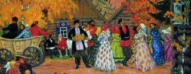
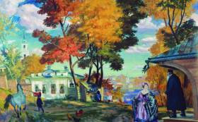
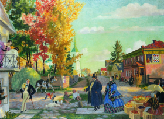

Художник, запечатлевший на своих ярких и жизнерадостных полотнах сцены русских будней и праздников. Обладал редким безграничным талантом, которому, в первую очередь, было присуще особое чувство и восприятие родной природы.
Логотип AFFINAGE
Биография
Борис Кустодиев родился 7 марта 1878 года в Астрахани. Отца, преподавателя духовной семинарии, не стало, когда мальчику было чуть больше года. Мать осталась вдовой в 25 лет и содержала четверых детей.
1887
Борис сначала учился в церковно-приходской школе, потом в гимназии. Когда ему было девять лет, в город привезли выставку художников-передвижников. Мальчика настолько впечатлила живопись, что он твердо решил научиться рисовать так же искусно. Мать нашла деньги, чтобы Борис смог брать уроки у известного в Астрахани художника Павла Власова.
1896
Окончив семинарию, в 1896 году Кустодиев отправился учиться в Москву, но в художественную школу его не приняли: Борису уже исполнилось 18 и он был слишком взрослым. Тогда Кустодиев поехал в Петербург, где подал документы в Высшее художественное училище при Академии художеств.
Трудно найти другого живописца, настолько горячо влюбленного в провинциальную Россию: самобытную, яркую, удивляющую.
Как и большинство работ автора, пейзажные полотна Кустодиева отличаются особой яркостью и насыщенностью цветовых планов. На картинах Кустодиева природа всегда представляет собой нечто гораздо большее, чем просто пейзажное изображение.

Особенности творчества художника Бориса Кустодиева: любил жанр портрета-картины, когда характер героя раскрывается через окружающий его пейзаж, интерьер или даже служащую фоном жанровую сцену; не жалел для бытовых сцен декоративности и зрелищности; с большой симпатией писал жизнь провинции.
Даже в самые беспросветные времена полотна Кустодиева лучились здоровьем, радостью и любовью к жизни. Сахарные сугробы и плавящиеся под солнцем купола. Полыхающие арбузы и красавицы, не уступающие арбузам ни интенсивностью румянца, ни гладкой округлостью форм.